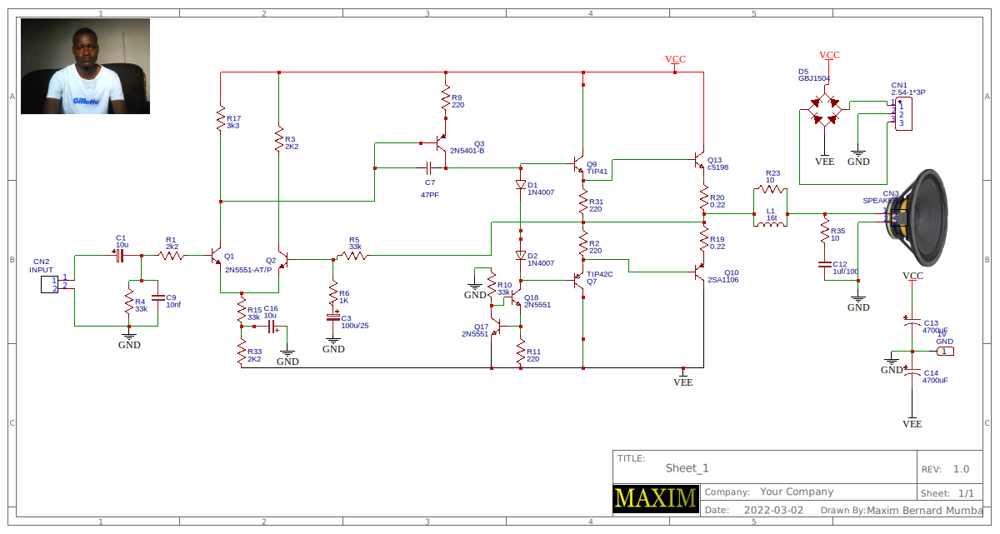

ealier we produced 250W per channel amplifier PCB which had 2channels and can go up to 1000W Music power. This pcb was a high quality high efficient
amplifier. Its output stage have common emitter configuration both on positive and negative side and its efficient
was above 80% due to that its output configuration was amplifying both current and voltage. See te pictur bellow.
And here is the circuit diagram and make sure you take note of exactly component number more especially
were we are using Shoktty diodes and rectifier diodes. This diodes have different properties. Rectifier diode 1N4007 has 0.7V has its voltage drop and shoktty
SB2200 0.32 connecting them together gives us a voltage drop of ~ 1.2V as in the digram bellow
250W AMPLIFIER A and B
This time our PCB is in classic purple which will motivate you to build both 250W A and 250W B
Yet again a mono 250W Prototype Y18-2730073A PCB is out as you can see above, which you can order from MAXIM. This is also a high power
amplier which is in two varieties the first type is having a dalington pair and a feedback pair at its output output stage. This amplifier is capable of handling
up to 400W music power.
As promissed the PCB now has well printed pcb with footprints which can help you build the amplifier without difficulties, even were you dont have a ciruit diagram. This time we maximbernardmumbaour PCBs very easy
that even a beginer in ELECTRONICS can manage to build. This is why we have the boards in two types. The one above has NPN transistors at the out put stage That is 2SC2581. To make the amplifirer work even at high power
you can replace them with 2SC5200. Thanks to the assesment which was taken, we found that most of the beginers were having had time buidig stereo amplifier. This is why our 250W amplifier is now mono cheap and easy to build.
Bellow is the PCB of a 250W A circuit digram.
The second type has a dalingtone pushpull setup at its output formed by TIP41,TIP42, A1106 and C2581. This makes it hundle high current and bigger speakers. And This is 250W A Y20-2730073A.
Both PCBs are high power ampliffiers working at same voltages and currents and you can conect them to up to 30V-0-30V and use C5200 and or A1943. The change which is there
now is that MAXIM circuit boards will now be coming with footprints showing the part number or value of individual components used. This means that, now we shall no
longer be adding circuit diagrams on pcbs as we supply. You can now get circuit diagram on our official webpage or here.
Model numbers of this pcbs shall be given and use the to get desired circuits.

Please take note of the model numbers like Y20-2730073A and get a apropriate circuit diagram. were necesary you can also ask for componet
values you can use to improve on the output power. As you may be well aware by now all Maxim PCBs are universal, therefore you can inrease and or
reduce out put power to the desired level.
More ciruits to be loaded soon............loading.................................